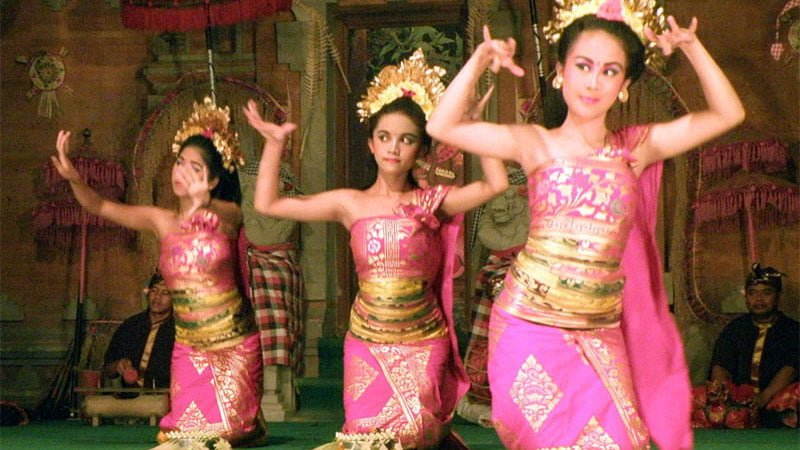

Tari Panyembrama
Tari Panyembrama. Bali, sebagai salah satu wajah kebudayaan yang paling kentara di Indonesia, sangatlah kaya akan kesenian. Ditempat inilah, semua orang merasa senang dalam kemolekan alam sembari terus takjub akan budaya masyarakatnya yang khas.
Sebagai bagian dari budaya, Bali dikenal melalui beragam jenis tarian yang secara fungsionalitas terbagi menjadi Wali, Bebali dan Balih-Balihan. Diantara sekian banyak tari Bali, ada Tari Panyembrama sebagai tari yang memiliki fungsi cukup dinamis.
Secara umum, Tari Panyembrama adalah tarian penyambutan. Namanya sendiri bermakna penyambutan yang berasal dari kata dalam bahasa Bali “sambrama” yang berarti selamat datang.
Panyembrama adalah sebuah bentuk tari Bali sekuler yang tercipta pada kisaran tahun 1970-an sebagai perkembangan gerak beberapa tarian sakral Bali, termasuk juga Tari Pendet dan Tari Gabor. Tari ini adalah karya dari maestro tari Bali, I Nyoman Kaler dengan penata tabuh oleh I Wayan Bratha.
Untuk pertama kalinya, Tari Panyembrama ditampilkan pada tahun 1971 pada Perayaan Pandan. Dahulu tari ini difungsikan sebagai penyambutan turunnya para leluhur yang dimainkan menghadap ke pelinggih pada tiap piodalan di pura sebagai pelengkap Tari Sanghyang atau Rejang.
Seiring perkembangannya, meski tetap sebagai tari penyambutan, Panyembrama beralih fungsi menjadi tarian menyambut tamu-tamu kehormatan atau wisatawan.
Para penari Panyembrama menari dengan membawa bokor atau mangkok besar berisi bunga. Sambil menari, mereka menabur bunga kepada para tamu sebagai ucapan selamat datang.
Dalam hal tata busana, penari menggunakan tapih berwarna kuning dengan kamen diatasnya. Ada juga sabuk prada yang dililitkan di tubuh dan selendang melilit bagian dada. Sementara itu, bagian kepala mereka dihiasi bunga emas, cemara, bunga imitasi serta rambut yang disasak.
Tari Panyembrama termasuk jenis tari kekebyaran yang dalam prakteknya diiringi oleh Gong Kebyar. Struktur pengiring meliputi, pengrawit, pepeson, pengawak, pengencet, dan pekaad.
Pengrawit adalah bagian awal dari iringan tari yang selanjutnya disusul pepeson menandai keluarnya para penari. Pengawak adalah bagian inti yang mana penari menarikan ide utama dari tarian. Tempo iringan akan naik pada pengencet sebagai pertanda tari akan selesai hingga masuk ke pekaad seiring penari keluar panggung.
<< Kembali